Die Anleitung bezieht sich auf PostgreSQL Version 9.6.8 und PostGIS Version 2.4.4 unter einem OpenSUSE Leap 15.0.
1. Administration
Dieser Abschnitt befasst sich mit der Installation und Administration der Datenbank als Vorbereitung für die Arbeit mit PGVersion.
1.1 Installation der Datenbank
Als Beispiel nehmen wir an, dass die Datenbank historisierung heißt und vom Standard-Administrator postgres auf dem Server mit der IP-Adresse 192.168.2.10 installiert werden soll.
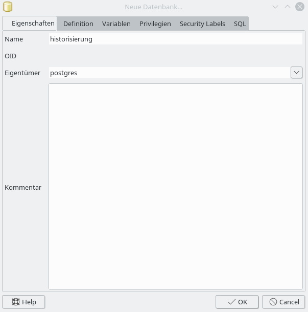
Abbildung 1: Erstellen einer neuen Datenbank mit PgAdmin3.
Zum Testen werden zwei Login-Rollen (nutzer1 und nutzer2) für die Datenbank erstellt. Dies kann entweder über das Administrations-Tool PgAdmin3 stattfinden. Zur Vereinfachung sind Benutzername und Passwort identisch.
Die Konfigurationsdatei zur Authentifizierung pg_hba.conf muss den Erfordernissen der Nutzerumgebung angepasst werden. Es werden Einträge für gültige IP-Adressbereiche und zur Authentifizierung hinzugefügt.
Es erfolgt nun die Anpassung PostgeSQL Konfigurationsdatei postgresql.conf. Es gibt hier eine Vielzahl von Einstellungsmöglichkeiten. Notwendig sind für den Beginn aber nur die Parameter port und listen_addresses. Diese gewähren den Datenbankzugriff über das Netzwerk. Daher ändern wir den folgenden Eintrag:
listen_addresses = '*'
port = 5432
Alle weiteren Parameter belassen wir an dieser Stelle wie sie sind.
1.1.4 Aktivieren der PostGIS Erweiterung für die Datenbank
Um räumliche Funktionalität in PostgreSQL nutzen zu können, muss die Datenbank um die PostGIS Erweiterungen ergänzt werden. Dies kann entweder über das Administrations-Tool PgAdmin3 stattfinden oder unter Linux in der Bash ausgeführt werden.
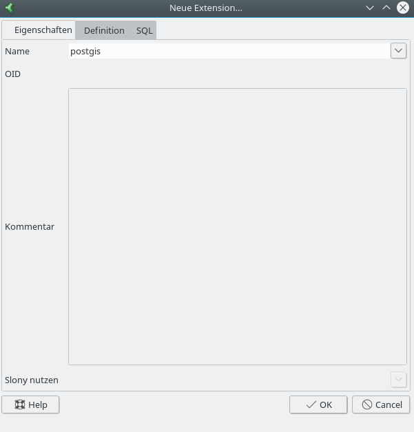
Abbildung 2: PostGIS Erweiterung installieren.
Erweiterung um GIS-Funktionen nach Anmeldung an der Datenbank mit dem Befehl:
psql -U postgres -h 192.168.2.10 historisierung
historisierung=# CREATE EXTENSION postgis;
1.2 Installation des QGIS Plugins PgVersion
PgVersion steht als Plugin über das Repository https://pkg.sourcepole.ch/qgis/pgversions.xml zur Verfügung und kann dadurch einfach über den QGIS Plugin Manager installiert werden.
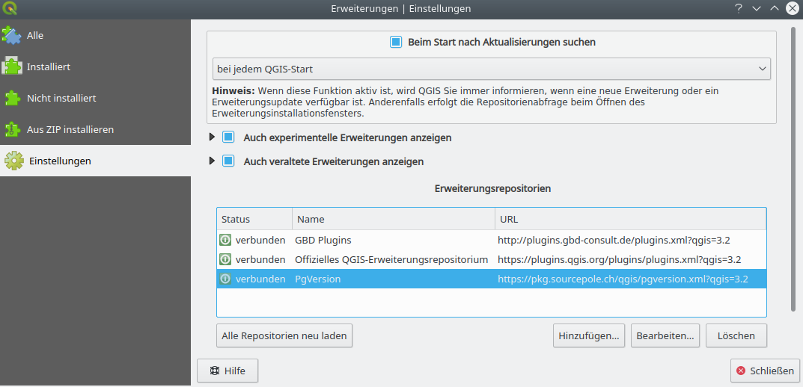
Abbildung 3: PgVersion Repository der Firma Sourcepole.
Nach der Installation liegt es im Arbeitsverzeichnis des Benutzers.
unter Linux:
/home/<benutzer>/.local/share/QGIS/QGIS3/profiles/default/python/plugins/pgversion/
unter Windows:
C:\Users\<benutzer>\AppData\Roaming\QGIS\QGIS3\profiles\default\python/plugins/pgversion/
1.3 Installation von PgVersion
Die Erweiterung der Datenbank mit den pgvs-Funktionen von PgVersion wird normalerweise von einem Rechner aus gestartet, auf dem das entsprechende QGIS Plugin „pgversion“ installiert ist. Es gibt dabei die Möglichkeit es über die Kommandozeile oder das Plugin zu installieren.
1.3.1 Installation über die Kommandozeile
Wechseln Sie in das docs Verzeichnis des Plugins.
unter Linux:
/home/<benutzer>/.local/share/QGIS/QGIS3/profiles/default/python/plugins/pgversion/docs/
unter Windows:
C:\Users\<benutzer>\AppData\Roaming\QGIS\QGIS3\profiles\default\python/plugins/pgversion/docs/
Führen Sie folgenden Befehl über die Kommandozeile aus
psql -U postgres -d historisierung -h 192.168.2.10 -f create_pgversion_schema.sql
Damit wird ein neues Schema versions in der Datenbank historisierung angelegt, in das die neuen pgvs-Funktionen abgelegt sind.
Die Funktionen können grundsätzlich auch direkt auf der Datenbank ausgeführt werden. Das bedeutet, dass PgVersion auch ohne QGIS bzw. das QGIS-Plugin verwendet werden kann.
Desweiteren wird eine neue Gruppenrolle versions angelegt. Diese enthält bereits eine Reihe von Rechten, damit Login-Rollen, die Mitglied der Gruppenrolle versions sind, mit PgVersion arbeiten können.
1.3.2 Installation mit dem QGIS Plugin
Die andere Möglichkeit besteht darin, die Installation der pgvs-Funktionen in QGIS über das geladene Plugin durchzuführen. Wenn Sie einige Layer in die neue Datenbank importiert haben und mit der Historisierung des ersten Layers beginnen möchten, klicken Sie auf das Icon. Dann kommt dazu die Meldung.
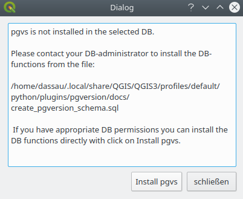
Abbildung 4: PgVs ist nicht installiert.
Klicken Sie nun auf das Icon Install pgvs, um die Versionierung zu installieren. Danach sollte eine Erfolgsmeldung erscheinen.
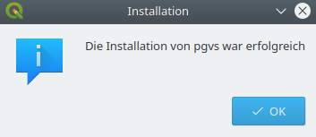
Abbildung 5: Die Installation von PgVs war erfolgreich.
1.3.3 Rechtemanagement
Bevor nun damit begonnen wird, erste Layer zu versionieren, sollten ein paar DEFAULT PRIVILEGES ergänzt werden. Dazu kann z.B. wieder PgAdmin3, der QGIS DB Manager oder die Kommandozeile genutzt werden. Je nach Bedarf können die Rechte angepasst werden – hier ein Beispiel:
Rollen nutzer1 und nutzer2 werden Mitglied der Gruppenrolle versions
GRANT versions TO nutzer1;
GRANT versions TO nutzer2;
Default Zugriff auf zukünftige Tabellen erlauben
ALTER DEFAULT PRIVILEGES IN SCHEMA public, versions GRANT ALL ON TABLES TO versions;
Default Rechte auf Funktionen in Schema versions geben
ALTER DEFAULT PRIVILEGES IN SCHEMA versions, public GRANT EXECUTE ON FUNCTIONS TO versions;
Default Rechte auf Sequenzen in Schemas versions und public geben
ALTER DEFAULT PRIVILEGES IN SCHEMA versions, public GRANT USAGE, SELECT ON SEQUENCES TO versions;
Wenn eine Tabelle bereits vorher versioniert wurde, können entsprechende Rechte auch nachträglich gegeben werden. Die hier angegebenen Rechte können nach Bedarf angepasst werden.
Zugriff auf bereits existierende Tabellen erlauben
GRANT ALL ON ALL TABLES IN SCHEMA public, versions TO versions;
Rechte auf alle Sequenzen in Schema public und versions geben
GRANT USAGE, SELECT ON ALL SEQUENCES IN SCHEMA versions, public TO versions;
Rechte auf alle Funktionen in Schemas publich und versions geben
GRANT EXECUTE ON ALL FUNCTIONS IN SCHEMA versions, public TO versions;
2. Funktionalität des PgVersion Plugins
Nachdem die Datenbank historisierung mit dem Schema versions sowie den Nutzern nutzer1 und nutzer2 erstellt worden ist können die pgvs-Funktionen über das PgVersion Pugin genutzt werden.
Nach der Installation und Aktivierung des Plugins ist die Funktionalität über Icons in der Werkzeugleiste von QGIS erreichbar:
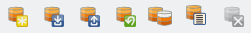
Abbildung 6: PG Version Werkzeugleiste.
Des Weiteren gibt es den Menüeintrag „Datenbank“ → „PG Version“:
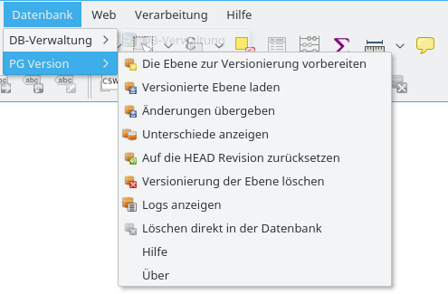
Abbildung 7: PG Version Integration in das QGIS Menü.
Jeder Benutzer der Versionierung arbeitet in seiner eigenen Sicht. Das entspricht im weitesten Sinne dem Arbeiten mit Subversion (SVN).
2.1 Enthaltene Datenbank-Funktionen
Das bei der Initialisierung erstellte Schema versions enthält alle Informationen, die notwendig sind, um die versionierten Tabellen zu verwalten. Achten Sie darauf, keine Änderungen im Schema versions durchzuführen. Dies ist alleine den pgvs-Funktionen vorbehalten.
Sie haben übrigens auch die Option, die pgvs-Umgebung in der template1 Datenbank des PostgreSQL Servers zu installieren. In diesem Fall wird jede neu erstellte Datenbank die pgvs Umgebung automatisch enthalten.
2.1.1 pgvsinit
Die pgvsinit() Funktion initialisiert die Versionierungsumgebung für einen einzelnen Layer. Der init-Befehl lautet:
select * from versions.pgvsinit('<schema>.<tabellenname>');
Die Initialisierung arbeitet in 3 Schritten:
Ein View mit dem Namen <tabellenname>_version wird erstellt. Dieser hat die gleiche Struktur wie die ursprüngliche Tabelle.
Es werden einige Regeln und Trigger für den neuen View erstellt.
Es wird ein Datensatz zur Meta-Tabelle versions.version_tables hinzugefügt.
Alle zukünftigen Änderungen, die Sie durchführen, finden auf dem View <tabellenname>_version statt. Wenn Sie die Geometrie oder den Attributwert eines versionierten PostGIS-Layers ändern möchten, können Sie dies in der gleichen Art und Weise zu tun, wie Sie eine echte Tabelle bearbeiten.
Nachdem die Änderungen für den Layer gespeichert wurden, werden sie sichtbar – aber nur für Sie. Dazu werden sie in einem temporären Zustand, als Memory Layer gespeichert. Um die Änderungen für den Rest der Welt sichtbar zu machen, müssen Sie Ihre Änderungen an die Datenbank committen.
Es ist nicht möglich, die Struktur der darunterliegenden Tabelle zu ändern. Wenn Sie dies tun wollen, müssen Sie das Versionierungssystem aus der Tabelle löschen, wie später beschrieben wird. Dann können Sie Ihre Änderungen vornehmen. Anschliessend müssen Sie wieder das Versionierungssystem für die Tabelle initialisieren.
2.1.2 pgvscommit
Wenn Ihre Änderungen nach einer Weile abgeschlossen sind, müssen Sie diese an die Master PostGIS-Tabelle übergeben (committen). Auf diese Weise stellen Sie Ihre Änderungen den anderen Benutzern zur Verfügung.
Der commit Befehl lautet:
select * from
versions.psvscommit('<schema>.<tabellenname>',
'<_log-Nachricht_>');
Manchmal kommt es vor, dass zwei oder mehrere Benutzer an dem selben Tabellenobjekt arbeiten. In diesem Fall listet die Funktion pgvscommit() die in Konflikt stehenden Datensätze auf. Die Konflikt-Objekte werden nicht in der Datenbank gespeichert. Bitte kontaktieren Sie in diesem Fall den anderen Benutzer in der Fehlermeldung, um zu diskutieren, welche Änderung in die Datenbank übernommen werden soll.
2.1.3 pgvsmerge
Um Konflikte zu lösen dient der Befehl:
select * from versions.pgvsmerge('<schema>.<tabellenname>',<_record-id_>,'<_Benutzername_>');
2.1.4 pgvsdrop
Die Versionierung für eine bestimmten Tabelle zu entfernen, geht mit dem Befehl: select * from versions.pgvsdrop('<tabellenname>');
Damit werden alle Versionierungseinträge aus der PostGIS-Tabelle entfernt. Sie können nur die Versionierung von einer Tabelle löschen, wenn alle Änderungen aller Nutzer committet sind.
Dabei müssen Sie keine Sorge haben, denn der Befehl pgvsdrop('<tabellenname>'); entfernt nur das Versionierungssystem. Die Master PostGIS-Tabelle mit allen ehemaligen Veränderungen (committs) existiert natürlich weiterhin.
2.1.5 pgvsrevert
Die pgvsrevert Funktion bietet die Möglichkeit, alle bis dato noch nicht committeten Änderungen zu entfernen und Ihre Daten auf die HEAD-Revision zurückzubringen. Die Revisionsnummer der HEAD-Revision wird dabei zurückgegeben.
select * from versions.pgvsrevert('<tabellenname>');
2.1.6 pgvsrevision
Die pgvsrevision Funktion gibt die installierte Revison von pgvs zurück.
select * from versions.pgvsrevision();
2.1.7 pgvslogview
Die pgvslogview Funktion gibt alle Protokolle einer bestimmten, versionierten Tabelle zurück:
select * from versions.pgpslogview ('<tabellenname>');
2.1.8 pgvsrollback
Die pgvsrollback Funktion bringt eine Revision wieder zurück auf die HEAD Revision:
select * from versions.pgvsrollback('<tabellenname>',
revision integer);
Diese Funktion arbeitet zuverlässig ab der pgvs db-Version 1.8.4 und der QGIS-Plugin Version 2.0.2. Falls es vorherige Revisionen eines Layers gibt, sind diese nicht für einen Rollback bereit.
3. Umsetzung als PgVersion Plugin in QGIS
Um das Arbeiten mit den pgvs-Funktionen zu erleichtern, sind diese als QGIS Plugin PgVersion für QGIS 3.x und PostGIS 2.x umgesetzt. Die damit zur Verfügung stehende Funktionalität umfasst folgende Arbeitsschritte:
3.1 Verbindung zur Datenbank
Starten Sie QGIS und erstellen Sie über „PostGIS Layer hinzufügen“ eine Verbindung zur Datenbank historisierung her. Laden Sie nun einen Layer, den Sie zur Versionierung vorsehen wollen, z.B. aus dem public Schema, in Ihr QGIS Projekt.
3.2 Layer mit dem Versionierungssystem versehen
Mit dieser Option starten Sie die Versionierung für einen PostGIS-Layer. Sie haben dies einmal zu tun für jeden Layer, der in die Versionierung integriert werden soll. Wählen Sie den Layer im Layerfenster aus und klicken Sie auf das Icon „Die Ebene zur Versionierung vorbereiten“ und das Versionierungssystem wird für diesen initialisiert.
Abbildung 8: Erstellen der Versionsumgebung.
Nachdem Sie diesen Schritt bestätigt haben, öffnet sich ein weiteres Fenster, welches die Initialisierung bestätigt und Sie darauf hinweist, bei Bedarf die Benutzerrechte für den View anzupassen und den Layer für die weitere Bearbeitung über die Funktionalität des QGIS pgversion Plugins „Laden des versionierten Layers“ zu laden.
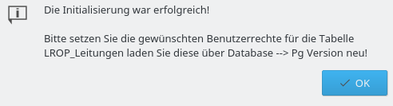
Abbildung 9: Die Initialisierung war erfolgreich!
Bestätigen Sie auch diese Meldung, indem Sie auf OK klicken. Der Layer wird nun aus dem Layerfenster entfernt. Die in Kapitel 1 beschriebenen Rechte wurden dem neu versionierten Layer als DEFAULT PRIVILEGES über die Gruppenrolle versions zugewiesen.
Um mit dem versionierten Layer arbeiten zu können, müssen Sie diesen nun erneut über die Plugin-Tools laden. Je nach Rechten kann jeder Benutzer Tabellen versionieren. Wir empfehlen aber, dies der Administration der Datenbank zu überlassen.
3.3 Laden des versionierten Layers
Jetzt können Sie über das Icon „Laden des versionierten Layers“ den entsprechenden View laden.
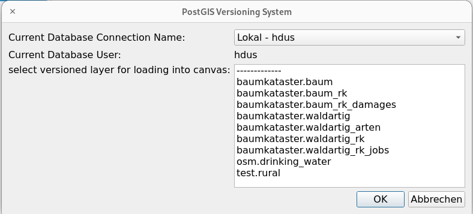
Abbildung 10: PostGIS Versionierungs-System.
Wählen Sie Ihre Datenbankverbindung. Sie sehen dann die angeschlossenen Benutzer und können den versionierten Layer aus einer Liste auswählen, in QGIS laden und mit der Bearbeitung beginnen. Wenn ein versionierter Layer bereits in QGIS geladen ist, bekommen Sie eine entsprechende Meldung angezeigt.
3.4 Änderungen übergeben
Wenn Sie Ihre Bearbeitung abgeschlossen haben, können Sie Ihre Änderungen an die Datenbank übermitteln (committen). Speichern Sie dazu als erstes die Änderungen ab. Der Layer wird dann im Layerfenster mit einem (modified) Vermerk ergänzt.
Klicken Sie nun auf das Icon „Änderungen übergeben“. Wenn keine Konflikte zwischen Ihren Änderungen und den Änderungen eines anderen Benutzers für die bearbeiteten Objekte erkannt wurden, öffnet sich ein Dialog, in den Sie eine Log-Nachricht eingeben müssen.
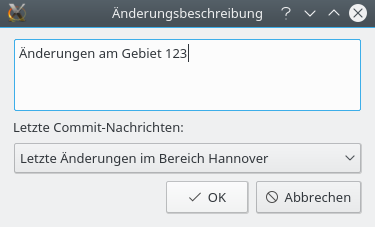
Abbildung 11: Änderungsbeschreibung.
Wenn Sie keine Nachricht eintragen, wird die unten stehende, letzte Commit-Nachricht verwendet. Es ist also nicht möglich, einen Commit ohne Commit-Nachricht durchzuführen. Bestätigen Sie diesen Dialog danach mit OK. Über das Icon „Logs anzeigen“ können Sie sich die Log-Informationen der letzten Commits anschauen.
Für den Fall, dass ein anderer Anwender ein oder mehrere Objekte, die Sie auch bearbeitet haben, geändert hat, öffnet sich ein neues Fenster, welches die Konflikte mit den anderen Änderungen anzeigt und Möglichkeit bietet, sich für die eine oder andere Version zu entscheiden.
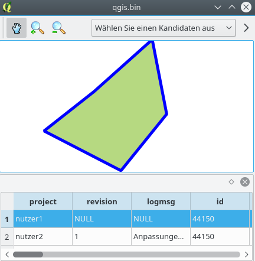
Abbildung 12: Anpassungen Nutzer 1.
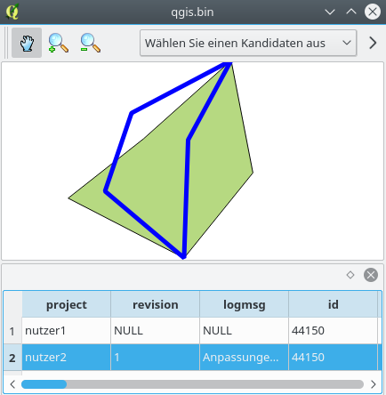
Abbildung 13: Anpassungen Nutzer 2.
Um die Konflikt-Varianten der Benutzer eines Objekts aus der Tabelle unter der Karte zu markieren, wählen Sie die Zeile und damit die Objektvariante eines Benutzers aus. Diese wird dann in blau hervorgehoben.
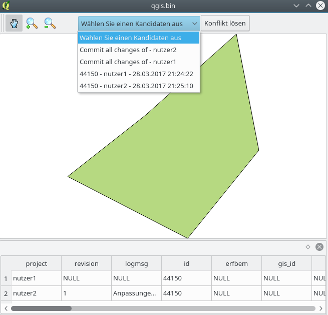
Abbildung 14: Kandidatenliste bei Konflikten.
Für die Bereinigung von Konflikten haben Sie zwei Möglichkeiten.
Sie können die „Konflikt“-Kandidaten nacheinander abarbeiten und individuell entscheiden, welcher Kandidat übernommen werden soll.
Sie wählen aus, dass alle commits eines Benutzers übernommen werden sollen.
3.5 Auf die HEAD Revision zurücksetzen
Wenn Sie eine gespeicherte, aber noch nicht committete Änderung entfernen wollen, bedeutet es, dass Sie die Ansicht zurück in die HEAD-Revision versetzen müssen, also auf die Version, die Sie zu Beginn der Arbeit ausgecheckt haben.
In diesem Fall werden alle Änderungen entfernt, die bis dahin durchgeführt haben. Um diese Funktion zu nutzen, wählen Sie den entsprechenden Layer aus und klicken auf das Icon „Auf die HEAD Revision zurücksetzen“.
3.6 Unterschiede anzeigen
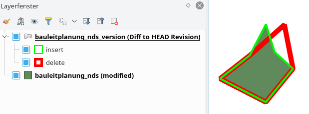
Abbildung 15: Unterschied lokale Anpassung und HEAD der Datenbank.
Wenn Sie eine gespeicherte, aber noch nicht committete Änderung mit der aktuellen HEAD-Revision in der Datenbank vergleichen möchten, können Sie dies mit dem Icon „Unterschiede zur HEAD Revision“ erreichen – siehe auch Kapitel 3.7.
Dabei wird ein Differenz-Layer für den gewählten Kartenausschnitt erstellt, der Ihnen mit einer grünen Linie zeigt, welche Geometrien hinzugefügt wurden und mit einer roten Linie, welche Geometrien entfernt wurden. Die Differenz-Layer sind Memory-Layer und können problemlos wieder aus dem Layerfenster gelöscht, wenn Sie sie nicht mehr brauchen.
Wenn Sie die Änderungen in der Attributtabelle vergleichen möchten, ist dies auch möglich, indem Sie mit dem QGIS Werkzeug „Objekte abfragen“ und dem Modus „Von oben nach unten“ auf das Objekt klicken. Dann werden Ihnen als Abfrageergebnisse die Attribute angezeigt, um sie visuell zu vergleichen.
3.7 Logs anzeigen
Der Logview Dialog gibt Ihnen die Möglichkeit, einen Überblick über die Änderungen eines einzelnen Layers zu erhalten. Sie sind damit auch in der Lage zurückzukehren zu einer bestimmten Revision oder einer Markierung. Der Rollback wird dann in QGIS geladen und angezeigt.
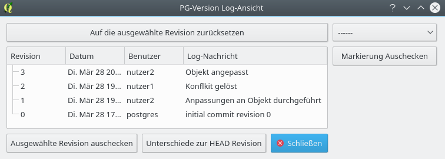
Abbildung 16: Revision-Logs anzeigen und darstellen.
Mögliche Vorgehensweisen sind:
Sie wählen eine Revision aus und klicken dann auf den Knopf „Ausgewählte Revision auschecken“, um diese in QGIS anzuzeigen.
Wenn Sie eine gespeicherte, aber noch nicht committete Änderung mit der aktuellen HEAD-Revision in der Datenbank vergleichen möchten – siehe auch Kapitel 3.6, können Sie dies mit dem Icon „Unterschiede zur HEAD Revision“ erreichen.
Sie wählen eine Revision aus und klicken dann auf den Knopf „Auf die ausgewählte Revision zurücksetzen“, um diese zur aktuellen Version (HEAD) zu machen. Davor erzeugte Revisionen bleiben dabei erhalten.
Sie wählen eine Revision aus und klicken auf die rechte Maustaste, um die Revision zu markieren und als „Tag“ abzulegen. Im Bild als Beispiel „Abschluss Phase 1 am 28.3.2017“. Diese können Sie nun bei Bedarf auswählen, auschecken und sich in QGIS anschauen.
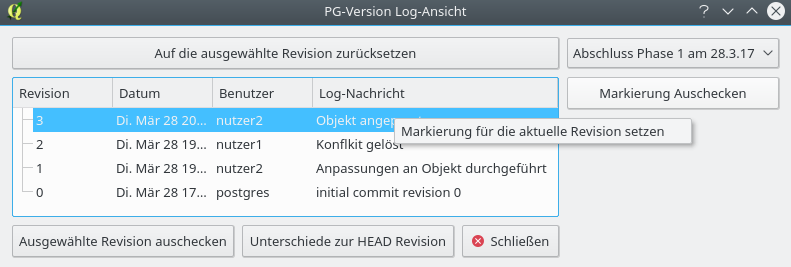
Abbildung 17: Markierungen (Tags) setzen.
3.8 Löschen ausgewählter Objekte direkt in der Datenbank
Diese Funktionalität ermöglicht es, zuvor in QGIS ausgewählte Objekte eines versionierten Layers direkt auf der Datenbank zu löschen. Die QGIS eigene Funktion zum Löschen von ausgewählten Objekten hat sich als sehr langsam herausgestellt, daher wurde diese Funktionalität an dieser Stelle zusätzlich integriert. Sie kann aber nur verwendet werden, wenn der Anwender die entsprechenden Rechte auf der Datenbank besitzt.
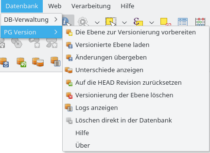
Abbildung 18: Löschen direkt in der Datenbank.
3.9 Versionierung der Ebene löschen
Diese Funktionalität ist genau wie das direkte Löschen in der Datenbank nicht direkt über die Werkzeugleiste erreichbar. Das Löschen der Versionierung eines Layers löscht nicht den Layer selbst.
Es geht dabei „nur“ um die Versionierungsumgebung des Layers. Dies ist in dem Moment notwendig, wenn Sie das Modell der Layers ändern wollen, z.B. eine neue Attributspalte hinzufügen oder keine Versionierung mehr für den Layer nutzen wollen.
Aktivieren Sie den entsprechenden Layer und klicken auf "Versionierung des Layer löschen“ im Menü.
4. Tipps für die Praxis
An dieser Stelle soll anhand praktischer Tipps der Einstieg in das Arbeiten mit dem Plugin erleichtert werden. Wir gehen dabei davon aus, dass die entsprechenden Layer bereits historisiert sind.
4.1 Grundsätzliche Einstellungen in QGIS
Stellen Sie unter Einstellungen→Optionen→Datenquellen folgendes ein:
Attributtabellenverhalten = Sichtbare Objekte der Karte anzeigen
Attributtabellenzeilencache = ~ 200000 (je nach maximaler Anzahl der Objekte in Ihren Layern)
Stellen Sie im Menü Einstellungen→Optionen→Darstellung folgendes ein:
Deaktivieren Sie „Normalerweise werden alle neuen Layer angezeigt“
Aktivieren Sie „Darstellungscache benutzen“
Aktivieren Sie „Layer mit vielen CPU-Kernen parallel zeichnen“ und geben Sie eine Anzahl der maximal zu nutzenden Kerne an.
Stellen Sie im Menü Einstellungen→Optionen→Digitalisierung ein:
Aktivieren Sie „Fangoptionsdialog in einem Dockfenster anzeigen“. Nach einem einmaligen QGIS-Neustart können Sie dann in dem Dockfenster den Fangmodus einstellen und auch festlegen, ob topologische Funktionalität beim Digitalisieren verwendet werden soll.
4.2 Historisierung eines Layers mit bigint Datentyp der ID Spalte
Bei einigen Daten ist die ID Spalte in der Attributtabelle als „bigint“ oder „Integer64“ Datentyp angelegt. Beim Import dieser Layer nach PostGIS wird der Datentyp nicht automatisch nach „bigserial“ umgewandelt. Dies ist aber notwendig für die Versionierung, wo die Spalte per Default als „Primary-Key“ Spalte fungiert. Daher muss nach dem Import und vor der Versionierung die Umwandlung vom bigint zum bigserial Datentyp manuell erfolgen, siehe Beispiel für den Layer bauleitplanung_nds.
Als erstes wird bei dem bestehenden Datensatz der nächst folgende Wert für die Spalte id ermittelt:
SELECT MAX(id)+1 FROM "bauleitplanung_nds";
Mit dem Ergebnis (z.B.: 44151) wird dann eine Sequenz erzeugt und der Spalte id zugewiesen, so dass diese dann in den serial Datentyp umgewandelt wird. Dazu sind folgende weitere Schritte notwendig:
CREATE SEQUENCE bauleitplanung_nds_id_seq start with 44151 owned by "bauleitplanung_nds"."id";
ALTER TABLE bauleitplanung_nds ALTER COLUMN id SET DEFAULT nextval('bauleitplanung_nds_id_seq');
ALTER SEQUENCE bauleitplanung_nds_id_seq OWNED BY "bauleitplanung_nds"."id";
Das PgVersion Plugin prüft bei der Initialisierung eines neuen Layers, ob der PrimaryKey Datentyp „serial“ oder „bigserial“ ist. Wenn dies nicht der Fall ist, wird der Vorgang mit einem Fehler abgebrochen.
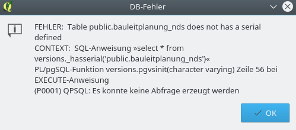
Abbildung 19: Fehler bei fehlendem serial Datentyp.
4.3 Anpassen vorhander Objektgeometrien eines Layers
Laden Sie den historisierten Layer grenzen_bkg über das pgversion Plugin und den WMS Dienst WebAtlasde über das Tool WMS-Layer hinzufügen.
Aktivieren Sie den Bearbeitungsmodus des Layers grenzen_bkg, zoomen Sie in einen Bereich und verscheiben Sie die Stützpunkte einer Linie.
Speichern Sie die Änderung in QGIS ab. Der geänderte Layer bekommt nun den Zusatz (modified). Die Änderung ist aber noch nicht an die Historisierung zurückgegeben.
Schauen Sie sich den Unterschied der beiden Versionen an, indem Sie auf das PgVersion-Tool „Unterschiede anzeigen“ klicken. Sie können nun in rot sehen, welcher Linienbereich entfernt, und in grün, welcher Linienbereich hinzugefügt wurde.
Wählen Sie das pgversion Tool „Änderung übergeben“ aus und tragen Sie eine Änderungsbeschreibung in das Commit-Fenster ein, z.B. „Linienverlauf angepasst“. Klicken Sie dann auf „ok“. Der Zusatz (modified) verschwindet nun wieder.
Sie können diese erste Veränderung nachvollziehen, indem Sie auf das PgVersion-Tool „Logs anzeigen“ klicken.
4.4 Anpassen vorhandener Attribute eines Layers
Laden Sie den historisierten Layer grenzen_bkg über das PgVersion Plugin.
Aktivieren Sie den Bearbeitungsmodus des Layers grenzen_bkg, öffnen Sie die Attributtabelle des Layers und schreiben Sie in die Spalte „bemerk“ etwas hinein.
Speichern Sie die Änderung in QGIS ab. Der geänderte Layer bekommt nun den Zusatz (modified). Die Änderung ist aber noch nicht an die Historisierung zurückgegeben.
Schauen Sie sich den Unterschied der beiden Versionen an, indem Sie auf das PgVersion-Tool „Unterschiede anzeigen“ klicken. Wenn Sie dann beide Versionen auswählen und diese mittels einer Abfrage im Modus Layerauswahl vergleichen, können sie die Änderungen nachvollziehen.
Wählen Sie danach das PgVersion-Tool „Änderung übergeben“ aus und tragen Sie eine Änderungsbeschreibung in das Commit-Fenster ein, z.B. „Eintrag in Spalte bemerk“. Klicken Sie dann auf „ok“. Der Zusatz (modified) verschwindet nun wieder.
Sie können diese Veränderung nachvollziehen, indem Sie auf das PgVersion-Tool „Logs anzeigen“ klicken.
4.5 Ein neues Objekt zu einem Layer hinzufügen
Laden Sie den historisierten Layer grenzen_bkg über das PgVersion Plugin.
Aktivieren Sie den Bearbeitungsmodus des Layers grenzen_bkg,zoomen Sie in einen Bereich und fügen Sie an einer beliebigen Stelle eine neue Grenzlinie hinzu.
Speichern Sie die Änderung in QGIS ab. Der geänderte Layer bekommt nun den Zusatz (modified). Die Änderung ist aber noch nicht an die Historisierung zurückgegeben.
Schauen Sie sich den Unterschied der beiden Versionen an, indem Sie auf das PgVersion-Tool „Unterschiede anzeigen“ klicken. Wenn Sie dann beide Versionen auswählen und diese mittels einer Abfrage im Modus Layerauswahl vergleichen, können sie die Änderungen nachvollziehen.
Wählen Sie danach das PgVersion-Tool „Änderung übergeben“ aus und tragen Sie eine Änderungsbeschreibung in das Commit-Fenster ein, z.B. „Neue Grenze hinzugefügt“. Klicken Sie dann auf „ok“. Der Zusatz (modified) verschwindet nun wieder.
Sie können diese Veränderung nachvollziehen, indem Sie auf das PgVersion-Tool „Logs anzeigen“ klicken.
4.6 Objekte in einem Layer löschen
Laden Sie den historisierten Layer windenergie über das pgversion Plugin.
Aktivieren Sie den Bearbeitungsmodus des Layers windenergie, zoomen Sie zu der Fläche mitten in der Nordsee, markieren Sie diese und löschen Sie dann. Dazu haben Sie zwei Möglichkeiten:
Die können die Fläche über das QGIS Werkzeug „Ausgewähltes löschen“ entfernen.
Sie können das PgVersion-Tool „Direkt in der Datenbank löschen“ verwenden.
Letzteres ist immer dann die bessere Option, wenn es sich um große Datenmengen handelt. Das kann mit dem QGIS Werkzeug ansonsten lange dauern.
Speichern Sie die Änderung in QGIS ab. Der geänderte Layer bekommt nun den Zusatz (modified). Die Änderung ist aber noch nicht an die Historisierung zurückgegeben.
Klicken Sie nun auf das PgVersion-Tool „Auf die Head Revision zurücksetzten“. Dadurch gehen Ihre Änderungen verloren, sie werden verworfen.
4.7 Aktuell durchgeführte Änderungen verwerfen
Laden Sie den historisierten Layer grenzen_bkg über das PgVersion Plugin.
Aktivieren Sie den Bearbeitungsmodus des Layers grenzen_bkg, zoomen Sie in einen Bereich und verschieben Sie die Stützpunkte einer Linie.
Speichern Sie die Änderung in QGIS ab. Der geänderte Layer bekommt nun den Zusatz (modified). Die Änderung ist aber noch nicht an die Versionierung zurückgegeben.
Wählen Sie das PgVersion-Tool „Änderung übergeben“ aus und tragen Sie eine Änderungsbeschreibung in das Commit-Fenster ein, z.B. „Fläche gelöscht“. Klicken Sie dann auf „ok“. Der Zusatz (modified) verschwindet nun wieder.
Sie können diese erste Veränderung nachvollziehen, indem Sie auf das PgVersion-Tool „Logs anzeigen“ klicken.
4.8 Auf eine vorherige Revision eines Layers zurückgehen
Laden Sie den historisierten Layer grenzen_bkg über das PgVersion Plugin.
Klicken Sie auf das PgVersion-Tool „Logs anzeigen“ und wählen Sie nun eine Revision aus, zu der Sie den Layer zurückstellen möchten.
Klicken Sie nun auf den Knopf „Auf die ausgewählte Revision zurücksetzen“. Die davor durchgeführten Schritte sind weiterhin historisiert. Sie haben aber den Stand des Layers auf den Stand der ausgewählten Revision zurückgestellt.
4.9 Einen Layer aus der Versionierung entfernen
Laden Sie den historisierten Polygonlayer schiffahrt über das PgVersion Plugin.
Wählen Sie den Layer aus und gehen Sie in das Menü Datenbank → PgVersion.
Dort können Sie mit Werkzeug „Versionierung der Ebene löschen“ den Layer aus der Versionierung entfernen.
Bitte denken Sie daran, dieser Schritt ist unwiderruflich!
4.10 Auflösen eines Konflikts bei der Bearbeitung
Laden Sie den historisierten Polygon-Layer schiffahrt über das PgVersion Plugin.
Wählen Sie den Layer aus, führen Sie eine Änderung an einem Polygon durch und speichern Sie diese lokal ab, ohne sie zu committen.
Laden Sie nun den historisierten Polygon-Layer schiffahrt über das PgVersion Plugin als ein anderer Benutzer. Führen an demselben Polygon eine Änderung durch und committen Sie diese zurück in die Versionierung.
Danach wechseln Sie wieder zum 1 Benutzer und versuchen, Ihre Änderung ebenbfalls zu committen.
Es startet nun ein Fenster, das Ihnen ermöglicht, den Konflikt gemeinsam mit dem anderen Anwender zu lösen.
4.11 Aktualisieren mit copy/paste am QGIS Bildschirm
Laden Sie den versionierten Datensatz schienen_version
Laden Sie die Fortführung Entwurf_LROP_2014_Schiene.shp
Bringen Sie beide Layer in den Bearbeitungsmodus und Ergänzen Sie dann den versionierten Datensatz mittels Copy/Paste mit den Geometrien und Attributen aus der Fortführung.
4.12 NULL Werte der Primary-Key Spalte nicht erlaubt
QGIS erkennt beim Editieren das Vorhandensein einer Primary-Key Spalte und erlaubt es dann nicht, diese ohne Eintrag eines Wertes zu speichern.
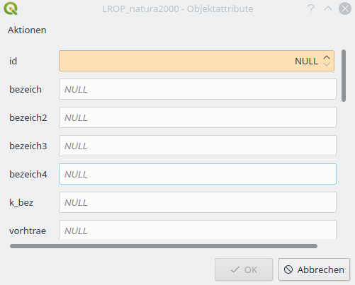
Abbildung 20: Speichern eines Wertes mit einem Primary-Key NULL.
Es gibt 2 Möglichkeiten, damit umzugehen.
Sie können immer irgendeinen Wert eintragen. Dieser wird beim Übergeben der Änderungen an die Versionierung überschrieben.
Sie definieren einmalig nach der initialen Versionierung eines Layers in dem Menü Layereigenschaften → Attributformular für die Spalte „ID“ im Bereich Bedienelementtyp einstellen, dass diese Versteck wird. Danach speichern Sie den Stil als Default in der Datenbank, damit dieser immer wieder automatisch für jeden Benutzer verwendet wird.
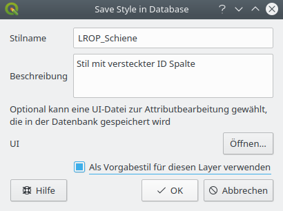
Abbildung 21: Speichern des Stils in der Datenbank.